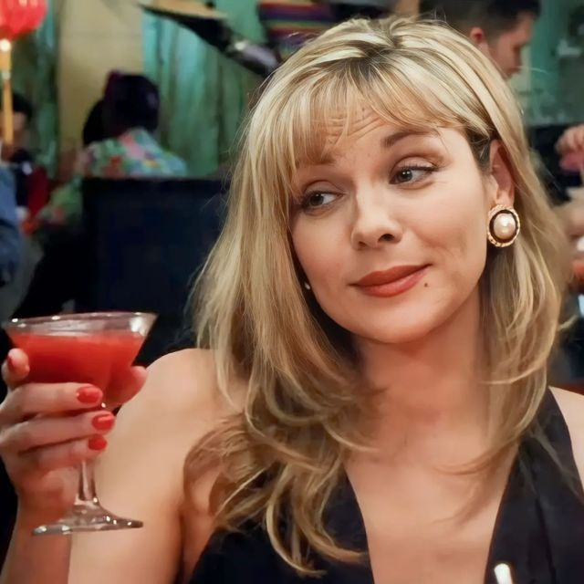

Samantha Jones
Toca el nombre

Samantha es relacionista pública y la más segura de sí misma. Vive el sexo y las relaciones sin culpa, y rompe la idea de que las mujeres deben buscar una sola pareja estable.
Es leal con sus amigas por encima de todo, algo que se nota cuando enfrenta un cáncer de mama sin perder su humor. Su vida social gira alrededor del Meatpacking District.